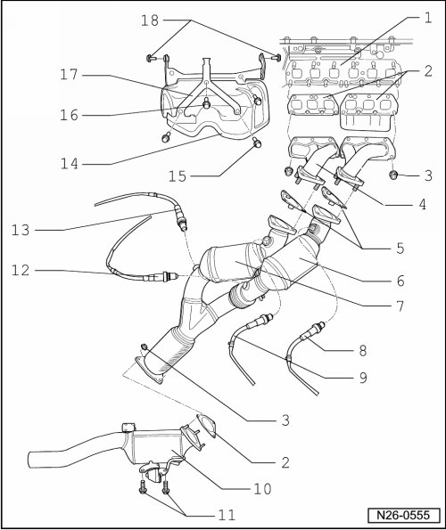

Exhaust Manifold with Catalytic Converters and Attachments, Assembly Overview
Exhaust Manifold with Catalytic Converters and Attachments, Assembly Overview
• Disconnect the batteries before removing front exhaust pipes with catalytic converters.
• When installing exhaust pipes, ensure that the flange connection after the catalytic converter seals tightly. Leaks in this area produce pulsations in the exhaust. This allows ambient air to reach the lambda probe after catalytic converter and the lambda regulation will be disturbed.
• Replace self-locking nuts.

1 Cylinder head
2 Gasket
• Replace
3 Securing nut
• M8: 25 Nm
• M10: 40 Nm
4 Exhaust manifold
5 Gasket
• Locating tabs face downward
• Replace
6 Primary catalytic converter
• Installed in the exhaust gas stream of cylinders 1, 2 and 3
7 Primary catalytic converter
• Installed in the exhaust gas stream of cylinders 4, 5 and 6
8 Heated oxygen sensor (G39), 50 Nm
• Installed in the exhaust gas stream of cylinders 1, 2 and 3
• Grease thread only with (G 052 112 A3); do not let (G 052 112 A3) get onto slits of oxygen sensor body.
• Use ring spanner set for oxygen sensor (3337) for removal and installation
9 Heated Oxygen Sensor (HO2S) 2 (G108), 50 Nm
• Installed in the exhaust gas stream of cylinders 4, 5 and 6
• Grease thread only with (G 052 112 A3); do not let (G 052 112 A3) get onto slits of oxygen sensor body.
• Use ring spanner set for oxygen sensor (3337) for removal and installation
10 Catalytic converter
11 25 Nm
12 Oxygen sensor behind three way catalytic converter (G130), 50 Nm
• Installed in the exhaust gas stream of cylinders 1, 2 and 3
• Grease thread only with (G 052 112 A3); do not let (G 052 112 A3) get onto slits of oxygen sensor body.
• Use ring spanner set for oxygen sensor (3337) for removal and installation
13 Oxygen Sensor (O2S) 2 behind Three Way Catalytic Converter (TWC) (G131), 50 Nm
• Installed in the exhaust gas stream of cylinders 4, 5 and 6
• Grease thread only with (G 052 112 A3); do not let (G 052 112 A3) get onto slits of oxygen sensor body.
• Use ring spanner set for oxygen sensor (3337) for removal and installation
14 Heat shield
• With intake manifold support
15 23 Nm
16 20 Nm
17 Bracket
18 23 Nm